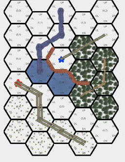
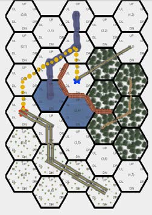

Explore constructs hex-grid terrain maps from a textual specification and produces a graphical display of the result (Figure 1.) Version 2 adds a new shortest path capability.
Explore v.2 can draw any size rectangular map your computer hardware can accommodate. The display engine will automatically supply scroll bars for maps which are too big for your display.
Explore v.2 maps are composed of terrain cells and cell to cell “connectors” which describe traffic way and water ways. Connectors are “weighted” by their traffic capacity. Version 2 also includes provision for marking start and end cells and for computing the shortest path between those cells. The viewer includes new support for displaying the shortest path. (See Figure 2.)

Figure 1 - Example terrain map in Explore viewer.

Figure 2 – A map with shortest path displayed (the dotted yellow line.)